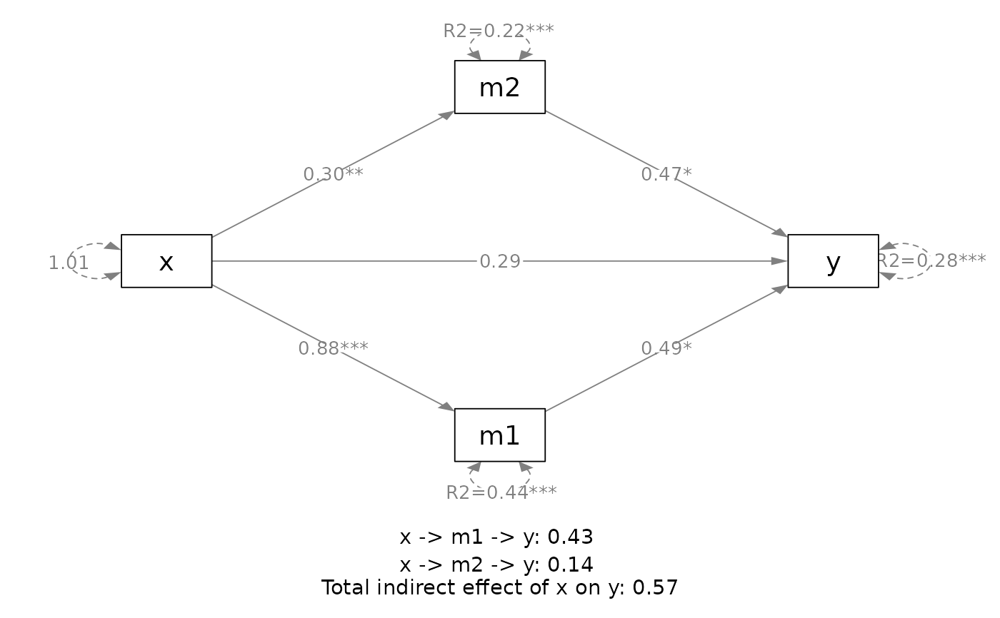
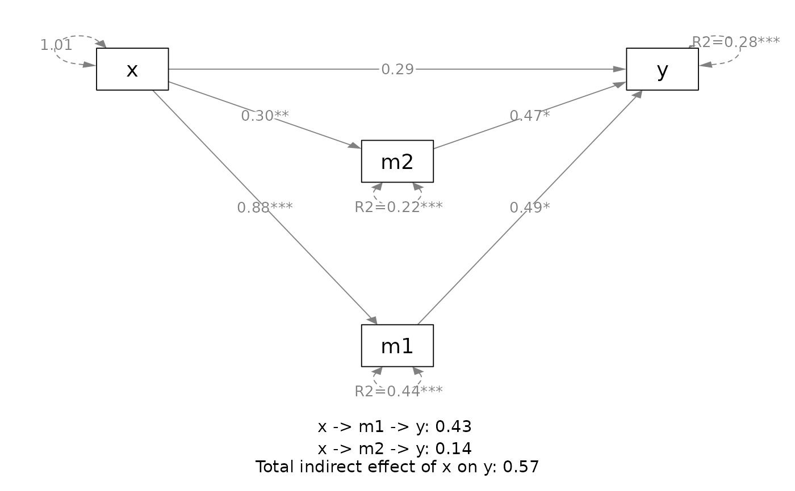
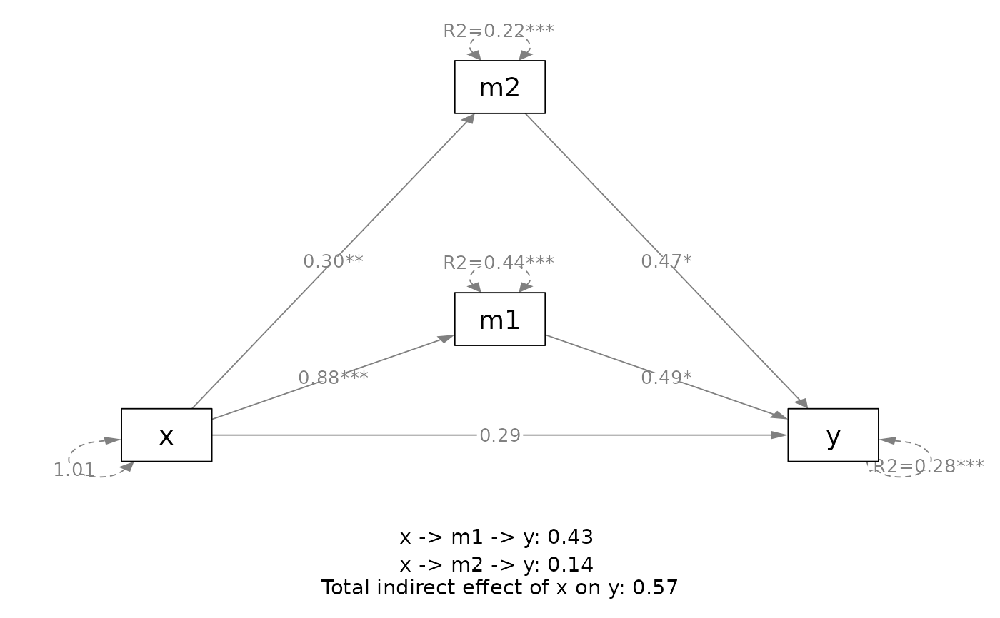

Plot Method for the Output of 'q_mediation' Family
Source:R/q_mediation_plot.R
plot.q_mediation.RdPlot the path model fitted by the family of 'q_mediation' functions.
Usage
# S3 method for class 'q_mediation'
plot(
x,
standardized = FALSE,
size_variables = NULL,
size_path_labels = NULL,
nchar_variables = NULL,
nchar_path_labels = NULL,
digits = 2,
rsquares = TRUE,
sigs = TRUE,
margins = c(5, 5, 5, 5),
v_pos = c("middle", "lower", "upper"),
v_preference = c("upper", "lower"),
print_indirect = TRUE,
indirect_standardized = c("none", "stdx", "stdy", "stdxy"),
size_indirect = 1,
plot_now = TRUE,
...
)
indirect_on_plot(
q_mediation_output = NULL,
digits = 2,
size_indirect = 1,
indirect_standardized = c("none", "stdx", "stdy", "stdxy"),
margins = c(5, 5, 5, 5),
original_plot = NULL
)Arguments
- x
The output of
q_mediation(),q_simple_mediation(),q_serial_mediation(), andq_parallel_mediation(). (Namedxbecause it is required in the naming of arguments of theplotgeneric function.)- standardized
Logical. If
TRUE,betaSin the printout ofq_mediation()family will be used in the figure, with only numerical variables standardized. IfFALSE, the default, then the original (unstandardized) coefficients will be used.- size_variables
The size of the observed variables (the "rectangles"), to be passed to
sizeManofsemPlot::semPaths(). Default isNULLand the size is determined internally based on the number of variables.- size_path_labels
The size of the edge labels (parameter estimates), to be passed to
edge.label.cexofsemPlot::semPaths(). Default isNULLand the size is determined internally based on the number of variables in the plot.- nchar_variables
The number of characters to be displayed for each variable. To be passed to
nCharNodesofsemPlot::semPaths(). Default isNULL, equivalent to0fornCharNodes, to disable abbreviating the variable names.- nchar_path_labels
The number of characters to be displayed for each label for a path. To be passed to
nCharEdgesofsemPlot::semPaths(). Default isNULL, equivalent to0fornCharEdges, to disable abbreviating the labels.- digits
The number of digits to be printed after the decimals. To be passed to
nDigitsofsemPlot::semPaths(). Default is 2.- rsquares
Logical. If
TRUE, the default, R-squares will be drawn instead of error variances for mediators and outcome variables (theyvariables).- sigs
Logical. If
TRUE, the default, significance test results will be marked by asterisks, based on the same p-values for R-squares displayed when printing the output of theq_mediation()family.- margins
The margins of the plot. A numeric vector of four values: bottom, left, top, and right. Passed to the
marargument ofsemPlot::semPaths().- v_pos
How the mediators are to be positioned vertically. If set to
"middle", with onexvariable and oneyvariable, the mediators will tend to be placed around the horizontal line joiningxandy. If set to"upper", they will be placed along or above this line. If set to"lower", they will be placed along or below this line. Note that this only affects the initial positions. The positions will be further adjusted based on the free paths in the model. This argument is to be passed tosemptools::auto_layout_mediation().- v_preference
The preference in shifting the mediators upward (
"upper") or downward ("lower") to avoid blocking or overlapping with any paths in the models. It is used only whenv_posis"middle". Ifv_posis"lower", thenv_preferencewill be forced to be"lower". Ifv_posis"upper", thenv_preferencewill be forced to be"upper". This argument is to be passed tosemptools::auto_layout_mediation().- print_indirect
Logical. Whether the indirect effect(s), and total indirect effect if applicable, will be printed on the plot. Default is
TRUE. Used only ifplot_nowisTRUE. Confidence intervals, if stored, will be printed, at the level of confidence used when doing the analysis.- indirect_standardized
If
print_indirectisTRUE, which type of effects are to be printed:"none"for the unstandardized (raw) indirect effects,"stdx"for the effects withxstandardized,"stdy"for the effects withystandardized, and"stdxy"for the effects with bothxandystandardized.- size_indirect
The size used when printing the indirect effects. The final size is determined by multiplying the final value
size_path_labels(determined internally if it is set toNULL) by this value. If equal to 1, then the size used in printing the indirect effects should be "close" to the size of numbers on the paths.- plot_now
If
TRUE, the default, the plot will be plotted when calling this method.- ...
For the
plotmethod, these are optional arguments to be passed tosemPlot::semPaths()to generate the initial plot, before being adjusted bysemptools::auto_layout_mediation().- q_mediation_output
The original object used to generate the plot (the output of the
q_mediation()family). Indirect effects will be retrieved from this output.- original_plot
The plot generated by the
plotmethod. If supplied, a new plot will be generated and then the indirect effects will be printed on this new plot. IfNULL, the default, the indirect effects will be printed on the existing plot. Space will be added to make room for the indirect effects only if this argument is set. Iforiginal_plotis not used, make sure there is enough room at the bottom for the indirect effects.
Value
The plot method returns a qgraph
object generated
by semPlot::semPaths(), which is
plotted by default unless plot_now
is set to FALSE. It can be further
modified by other functions that
work on a qgraph object, such as
those from semptools.
The function indirect_on_plot()
returns the object set to
q_mediation_output
invisibly. It is called for its
side-effect.
Details
This method requires the
semptools and semPlot packages.
They are not installed by default.
Install them first before using the
plot method.
This method draws the path models
fitted by q_mediation(),
q_simple_mediation(),
q_serial_mediation(), and
q_parallel_mediation(), with
path coefficients and R-squares.
It will try to set positions of the
variables automatically, following
the left-to-right convention: x
variables on the left, y variables
on the right, mediators between them,
and arrows (paths) flow from left to
right. The figure should usually be
usable. If not, it can be further
modified by helper functions such as
those in semptools that can
manipulate a qgraph object. For
example, semptools::move_node()
can be used to adjust the position
of a variable in the plot.
The helper function indirect_on_plot()
adds the indirect effect
estimates (as well as confidence
intervals and p-values, if
available) to a plot. The plot method
will add these effects by default,
and so users usually do not need to
use this function.
However, if the plot needs to be modified
before being drawn, this function
can be used to add the effects
after drawing the modified plot.
Examples
# These examples require the package
# semptools (version 0.3.2 or above).
# CI disabled in these examples.
# Please see the help page of these functions on forming
# confidence intervals for the indirect effects.
# ===== Simple mediation
out <- q_simple_mediation(x = "x",
y = "y",
m = "m",
cov = c("c2", "c1"),
boot_ci = FALSE,
data = data_med)
#> - Compute unstandardized indirect effect(s) ....
#> - Compute standardized-y indirect effect(s) ....
#> - Compute standardized-x indirect effect(s) ....
#> - Compute standardized-x-and-y indirect effect(s) ....
#> - Compute total indirect effect(s) ....
#> - Compute the direct effect ....
#> - Compute the standardized-y direct effect ....
#> - Compute the standardized-x direct effect ....
#> - Compute the standardized-x-and-y direct effect ....
#> Computation completed.
plot(out)
# ===== Serial mediation
out <- q_serial_mediation(x = "x",
y = "y",
m = c("m1", "m2"),
cov = c("c2", "c1"),
boot_ci = FALSE,
data = data_serial)
#> - Compute unstandardized indirect effect(s) ....
#> - Compute standardized-y indirect effect(s) ....
#> - Compute standardized-x indirect effect(s) ....
#> - Compute standardized-x-and-y indirect effect(s) ....
#> - Compute total indirect effect(s) ....
#> - Compute the direct effect ....
#> - Compute the standardized-y direct effect ....
#> - Compute the standardized-x direct effect ....
#> - Compute the standardized-x-and-y direct effect ....
#> Computation completed.
plot(out)
# Standardized effects
plot(out,
standardized = TRUE,
indirect_standardized = "stdxy")
# ==== Parallel mediation
out <- q_parallel_mediation(x = "x",
y = "y",
m = c("m1", "m2"),
cov = c("c2", "c1"),
boot_ci = FALSE,
data = data_parallel)
#> - Compute unstandardized indirect effect(s) ....
#> - Compute standardized-y indirect effect(s) ....
#> - Compute standardized-x indirect effect(s) ....
#> - Compute standardized-x-and-y indirect effect(s) ....
#> - Compute total indirect effect(s) ....
#> - Compute the direct effect ....
#> - Compute the standardized-y direct effect ....
#> - Compute the standardized-x direct effect ....
#> - Compute the standardized-x-and-y direct effect ....
#> Computation completed.
plot(out)

plot(out,
v_pos = "lower")

plot(out,
v_pos = "upper")

# ===== A user-specified mediation model
out <- q_mediation(x = "x1",
y = "y1",
model = c("x1 -> m11 -> m2 -> y1",
"x1 -> m12 -> m2 -> y1"),
cov = c("c2", "c1"),
boot_ci = FALSE,
data = data_med_complicated)
#> - Compute unstandardized indirect effect(s) ....
#> - Compute standardized-y indirect effect(s) ....
#> - Compute standardized-x indirect effect(s) ....
#> - Compute standardized-x-and-y indirect effect(s) ....
#> - Compute total indirect effect(s) ....
#> - No direct path from x1 to y1 in the model. Skip the computation of direct effect ...
#> Computation completed.
plot(out)